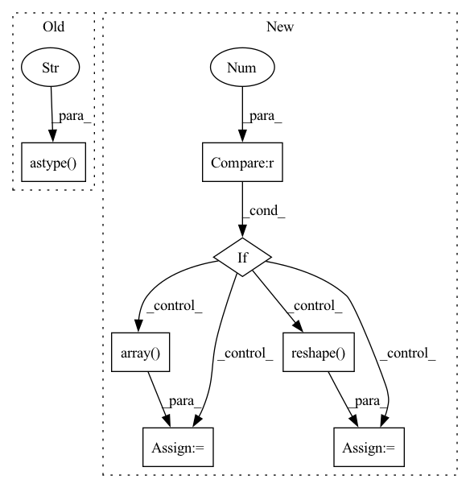

Pattern ID :10909

Before Change
//------------------------------------------------//
seg_img = np.zeros((np.shape(pr)[0], np.shape(pr)[1], 3))
for c in range(self.num_classes):
seg_img[:,:,0] += ((pr[:,: ] == c )*( self.colors[c][0] )).astype("uint8")
seg_img[:,:,1] += ((pr[:,: ] == c )*( self.colors[c][1] )).astype("uint8")
seg_img[:,:,2] += ((pr[:,: ] == c )*( self.colors[c][2] )).astype("uint8")
After Change
//------------------------------------------------//
image = Image.blend(old_img, image, 0.7)
elif self.mix_type == 1:
// seg_img = np.zeros((np.shape(pr)[0], np.shape(pr)[1], 3))
// for c in range(self.num_classes):
// seg_img[:, :, 0] += ((pr[:, :] == c ) * self.colors[c][0]).astype("uint8")
// seg_img[:, :, 1] += ((pr[:, :] == c ) * self.colors[c][1]).astype("uint8")
// seg_img[:, :, 2] += ((pr[:, :] == c ) * self.colors[c][2]).astype("uint8")
seg_img = np.reshape(np.array(self.colors, np.uint8)[np.reshape(pr, [-1])], [orininal_h, orininal_w, -1])
//------------------------------------------------//
// 将新图片转换成Image的形式
//------------------------------------------------//
image = Image.fromarray(np.uint8(seg_img))
elif self.mix_type == 2:
seg_img = (np.expand_dims(pr != 0, -1) * np.array(old_img, np.float32)).astype("uint8")
//------------------------------------------------//
// 将新图片转换成Image的形式
//------------------------------------------------//
In pattern: SUPERPATTERN
Frequency: 4
Non-data size: 7
Instances
Fragment ID: 37723967
Project Name: bubbliiiing/pspnet-pytorch
Commit Name: 373340e315d6e9a029041ec293673c06c3c1cb7e
Time: 2022-03-04
Author: 3323290568@qq.com
File Name: pspnet.py
M Class Name: PSPNet
N Class Name: PSPNet
M Method Name: detect_image(2)
N Method Name: detect_image(2)
M Parent Class: object
N Parent Class: object
M File Name: pspnet.py
N File Name: pspnet.py
M Start Line: 155
M End Line: 172
N Start Line: 115
N End Line: 190
'>
Before Change
)
coefficients = operator.raw_operator.coef_.transpose().astype("float32")
intercepts = operator.raw_operator.intercept_.reshape(1, -1).astype("float32")
multi_class = None
loss = None
if hasattr(operator.raw_operator, "multi_class"):
After Change
coefficients = operator.raw_operator.coef_.transpose().astype("float32")
intercepts = operator.raw_operator.intercept_
if np.ndim(intercepts) == 0:
intercepts = np.array(intercepts, dtype="float32")
else:
intercepts = intercepts.reshape(1, -1).astype("float32")
multi_class = None
loss = None
'>
Fragment ID: 37723905
Project Name: microsoft/hummingbird
Commit Name: c38178c4d1ee9927827a361daadcc5f4a7357fb2
Time: 2022-08-31
Author: 56846628+RomanBredehoft@users.noreply.github.com
File Name: hummingbird/ml/operator_converters/sklearn/linear.py
M Class Name: AnonimousClass
N Class Name: AnonimousClass
M Method Name: convert_sklearn_linear_model(3)
N Method Name: convert_sklearn_linear_model(3)
M Parent Class:
N Parent Class:
M File Name: hummingbird/ml/operator_converters/sklearn/linear.py
N File Name: hummingbird/ml/operator_converters/sklearn/linear.py
M Start Line: 42
M End Line: 42
N Start Line: 43
N End Line: 49
'>
Before Change
for c in range(self.num_classes):
seg_img[:,:,0] += ((pr[:,: ] == c )*( self.colors[c][0] )).astype("uint8")
seg_img[:,:,1] += ((pr[:,: ] == c )*( self.colors[c][1] )).astype("uint8")
seg_img[:,:,2] += ((pr[:,: ] == c )*( self.colors[c][2] )).astype("uint8")
//------------------------------------------------//
// 将新图片转换成Image的形式
//------------------------------------------------//
After Change
//------------------------------------------------//
image = Image.blend(old_img, image, 0.7)
elif self.mix_type == 1:
// seg_img = np.zeros((np.shape(pr)[0], np.shape(pr)[1], 3))
// for c in range(self.num_classes):
// seg_img[:, :, 0] += ((pr[:, :] == c ) * self.colors[c][0]).astype("uint8")
// seg_img[:, :, 1] += ((pr[:, :] == c ) * self.colors[c][1]).astype("uint8")
// seg_img[:, :, 2] += ((pr[:, :] == c ) * self.colors[c][2]).astype("uint8")
seg_img = np.reshape(np.array(self.colors, np.uint8)[np.reshape(pr, [-1])], [orininal_h, orininal_w, -1])
//------------------------------------------------//
// 将新图片转换成Image的形式
//------------------------------------------------//
image = Image.fromarray(np.uint8(seg_img))
elif self.mix_type == 2:
seg_img = (np.expand_dims(pr != 0, -1) * np.array(old_img, np.float32)).astype("uint8")
//------------------------------------------------//
// 将新图片转换成Image的形式
//------------------------------------------------//
'>
Fragment ID: 37724017
Project Name: bubbliiiing/hrnet-pytorch
Commit Name: e53724ea45003d8acd5d8b5465fa97038d486824
Time: 2022-03-19
Author: 3323290568@qq.com
File Name: hrnet.py
M Class Name: HRnet_Segmentation
N Class Name: HRnet_Segmentation
M Method Name: detect_image(2)
N Method Name: detect_image(2)
M Parent Class: object
N Parent Class: object
M File Name: hrnet.py
N File Name: hrnet.py
M Start Line: 153
M End Line: 170
N Start Line: 113
N End Line: 188
'>
Before Change
coefficients = operator.raw_operator.coef_.transpose().astype("float32")
if len(coefficients.shape) == 1:
coefficients = coefficients.reshape(-1, 1)
intercepts = operator.raw_operator.intercept_.reshape(1, -1).astype("float32")
return LinearModel(operator, coefficients, intercepts, device, is_linear_regression=True)
After Change
coefficients = coefficients.reshape(-1, 1)
intercepts = operator.raw_operator.intercept_
if np.ndim(intercepts) == 0:
intercepts = np.array(intercepts, dtype="float32")
else:
intercepts = intercepts.reshape(1, -1).astype("float32")
return LinearModel(operator, coefficients, intercepts, device, is_linear_regression=True)
'>
Fragment ID: 37723904
Project Name: microsoft/hummingbird
Commit Name: c38178c4d1ee9927827a361daadcc5f4a7357fb2
Time: 2022-08-31
Author: 56846628+RomanBredehoft@users.noreply.github.com
File Name: hummingbird/ml/operator_converters/sklearn/linear.py
M Class Name: AnonimousClass
N Class Name: AnonimousClass
M Method Name: convert_sklearn_linear_regression_model(3)
N Method Name: convert_sklearn_linear_regression_model(3)
M Parent Class:
N Parent Class:
M File Name: hummingbird/ml/operator_converters/sklearn/linear.py
N File Name: hummingbird/ml/operator_converters/sklearn/linear.py
M Start Line: 82
M End Line: 82
N Start Line: 88
N End Line: 94